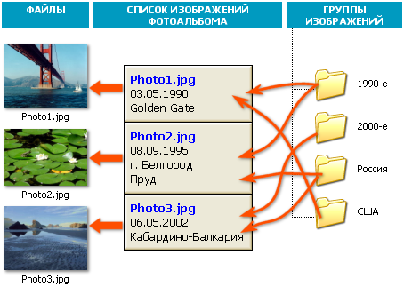

В основу работы программы положен принцип хранения ссылок на изображения, точнее, на файлы изображений. Поскольку сами изображения хранятся отдельно, их, во-первых, можно легко копировать независимо от программы, во-вторых, просматривать любыми сторонними программами, а в-третьих, не тратится места при копировании ссылки на изображение.
Изображения собираются в группы, а сами группы организовываются иерархически, в виде вложенных папок, в точности, как папки в Проводнике. Группы отображаются в программе в виде папок в левой части окна программы, а входящие в группу изображения — в правой части.
Следует заметить, что группы содержат, опять же, не непосредственные ссылки на изображения. Ссылки на изображения формируют в PhoA некоторый "обменный фонд", общий список изображений, каждый элемент которого содержит данные описания.
Из этого общего списка ссылок составляются группы, то есть группы содержат "ссылки на ссылки на изображения". Тем, кого эти объяснения только запутывают, советую взглянуть на рисунок:

О чём он нам говорит? Он нам говорит о том, что единожды описав изображение на диске, вы можете добавлять его во сколько угодно групп (хоть во все сразу), при этом все эти добавленные изображения в действительности будут иметь лишь одну ссылку на файл и лишь одно описание (дату, место, ключевые слова, описание, эскиз и т. д.).
Дальше >> {[%hh_ftr_ru]}